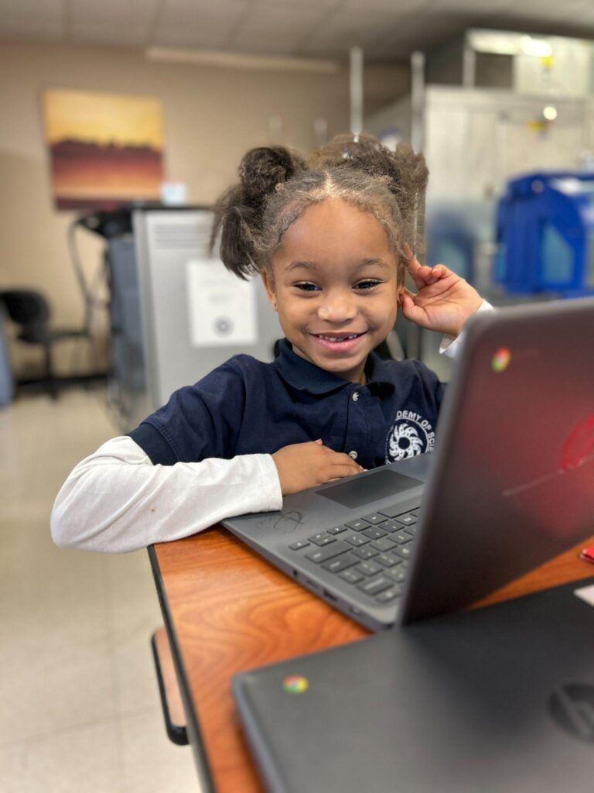
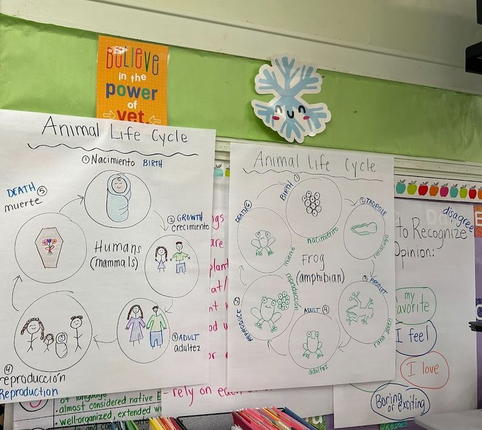
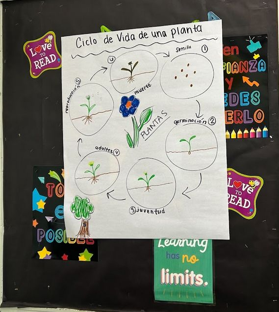
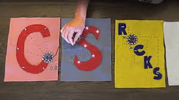

Elementary School · Grades PK–5
Hands-on Classroom Experiences
Computer science that young learners can touch, build, and test, woven into the reading, math, and science already on your schedule. Built on sixteen years of PUMP-CS work with Wisconsin elementary teachers.

Getting Started
CS ideas you can touch
The Physical Computing track primarily serves educators in grades PK–8. Whether you teach a self-contained classroom, a specials block, a library or maker space, or a middle school course, you'll explore ways to turn computational thinking into something students can build, program, and test
No experience required
Experiences are differentiated so that newcomers and experienced educators can each find a meaningful starting point
Built on years of elementary PD
PUMP-CS has led Code.org CS Fundamentals workshops and the Project {FUTURE} elementary partnership, reaching hundreds of K–5 teachers.
Tools & platforms
What you may explore
The track may incorporate concepts supported by the following tools, along with other hands-on computing applications. The final tool list will be confirmed with the program announcement.
Sphero
Programmable robots that let students plan, code, and observe movement, sensing, and problem solving.
micro:bit
A pocket-sized programmable board for connecting code to inputs, outputs, and real-world data.
OctoStudio
A creative coding app for making interactive projects, animations, and games with a phone or tablet.
Other hands-on tools
Additional physical-computing and unplugged applications suited to your students' ages and your classroom resources.
What you'll do
Learn by making, then plan for your classroom
Build and program
Work hands-on with devices and apps the way students will, so you can anticipate questions and troubleshoot with confidence.
Differentiate for your learners
Explore options that adapt to different grade levels, subject areas, experience levels, and accessibility needs.
Connect to your curriculum
Find ways to weave computing into the math, science, literacy, art, and other instruction already in your schedule.
Prepare to implement
Leave ready to bring your learning to students during the following school year.
PUMP-CS in Wisconsin elementary schools
Sixteen years of elementary CS
Elementary computer science has been part of PUMP-CS from the start, and its largest program reached teachers in hundreds of classrooms.
- 2010sCS Fundamentals workshopsMulti-day Code.org CS Fundamentals Intro and Deeper Dive workshops give K–5 teachers foundational CS knowledge and classroom strategies. Marquette serves as Code.org's Regional Partner for Wisconsin.
- 2016CS in every MPS schoolA $1 million NSF award set out to certify 200 Milwaukee Public Schools teachers, enough to bring CS to every elementary, middle, and high school in the district.
- 2017Wisconsin's first K–12 CS standardsThe new standards called for elementary schools to integrate computer science throughout the curriculum.
- 2020Project {FUTURE}A five-year U.S. Department of Education EIR partnership with Sacred Heart University brought CS professional learning to 750 teachers at 30 partner elementary schools in Wisconsin and Connecticut.
In the classroom
What elementary CS looks like
Unplugged activities, block-based coding, physical computing, and CS woven into other subjects.






Standards
Aligned to the standards that guide Wisconsin
Workshops align with the 2026 CSTA PK–12 CS Standards, and connect with Wisconsin's Academic Standards for Computer Science, updated in November 2025.
Year-round support
Keep learning after the summer
PUMP-CS will help coordinate ongoing professional learning through the school year, and the Wisconsin Dairyland CSTA chapter plans monthly professional learning community sessions so you can share ideas with other Wisconsin educators. Participant stipends are administered directly by CSTA.
Save the date: August 2027
Exact dates, location, and application details will be announced. Questions? Visit the contact page.
Teaching other grades?
See middle school (6–8) and high school (9–12) tracks.